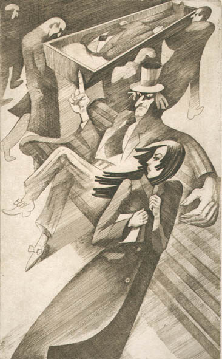

Маргарита
Прекрасный особняк, тоска по исчезнувшему Мастеру и встреча у Кремлевской стены
Краткое содержание главы
За мной, читатель! Кто сказал тебе, что нет на свете настоящей, верной, вечной любви? Да отрежут лгуну его гнусный язык! За мной, мой читатель, и только за мной, и я покажу тебе такую любовь!
Нет, Маргарита Николаевна не нуждалась в деньгах. Она была женой очень крупного специалиста, сделавшего важнейшее открытие государственного значения, занимала прекрасный верхний этаж старинного готического особняка в одном из переулков у Арбата, имела преданую домработницу Наташу и никогда не знала ни нужды, ни бытовых тревог. И тем не менее Маргарита Николаевна не была счастлива ни одной минуты с тех пор, как осенью исчез ее возлюбленный — Мастер.
Все эти месяцы она берегла чудом уцелевшую от огня, обугленную по краям часть рукописи, засушенную розу и фотографию, мысленно умоляя высшие силы лишь об одном: узнать, жив ли он или уже погиб. В эту пятницу, когда мимо Кремлевского сада несли гроб с телом раздавленного трамваем Берлиоза, Маргарита сидела на скамейке и отчаянно думала о том, что готова заложить душу самому дьяволу, лишь бы вновь увидеть Мастера.
В тот же миг рядом присел невысокий рыжий человек с торчащим клыком. Азазелло безошибочно процитировал ее мысли, завел разговор о потерянной рукописи и пригласил ее сегодня вечером в гости к одному знатному иностранцу — обещая, что там она непременно получит известие о том, кого любит.
За мной, читатель! Кто сказал тебе, что нет на свете настоящей, верной, вечной любви? Да отрежут лгуну его гнусный язык!
За мной, мой читатель, и только за мной, и я покажу тебе такую любовь!
Нет! Мастер ошибался, когда с горечью говорил Иванушке в больнице в тот час, когда ночь перевалилась через полночь, что она позабыла его. Этого быть не могло. Она его, конечно, не забыла.
Прежде всего откроем тайну, которую мастер не пожелал открыть Иванушке. Возлюбленную его звали Маргаритою Николаевной. Все, что мастер говорил о ней, было сущей правдой. Он описал свою возлюбленную верно. Она была красива и умна. К этому надо добавить еще одно – с уверенностью можно сказать, что многие женщины все, что угодно, отдали бы за то, чтобы променять свою жизнь на жизнь Маргариты Николаевны. Бездетная тридцатилетняя Маргарита была женою очень крупного специалиста, к тому же сделавшего важнейшее открытие государственного значения. Муж ее был молод, красив, добр, честен и обожал свою жену. Маргарита Николаевна со своим мужем вдвоем занимали весь верх прекрасного особняка в саду в одном из переулков близ Арбата. Очаровательное место! Всякий может в этом убедиться, если пожелает направиться в этот сад. Пусть обратится ко мне, я скажу ему адрес, укажу дорогу – особняк еще цел до сих пор.
Маргарита Николаевна не нуждалась в деньгах. Маргарита Николаевна могла купить все, что ей понравится. Среди знакомых ее мужа попадались интересные люди. Маргарита Николаевна никогда не прикасалась к примусу. Маргарита Николаевна не знала ужасов житья в совместной квартире. Словом... Она была счастлива? Ни одной минуты! С тех пор, как девятнадцатилетней она вышла замуж и попала в особняк, она не знала счастья. Боги, боги мои! Что же нужно было этой женщине?! Что нужно было этой женщине, в глазах которой всегда горел какой-то непонятный огонечек, что нужно было этой чуть косящей на один глаз ведьме, украсившей себя тогда весною мимозами? Не знаю. Мне неизвестно. Очевидно, она говорила правду, ей нужен был он, мастер, а вовсе не готический особняк, и не отдельный сад, и не деньги. Она любила его, она говорила правду. Даже у меня, правдивого повествователя, но постороннего человека, сжимается сердце при мысли о том, что испытала Маргарита, когда пришла на другой день в домик мастера, по счастью, не успев переговорить с мужем, который не вернулся в назначенный срок, и узнала, что мастера уже нет.
Она сделала все, чтобы разузнать что-нибудь о нем, и, конечно, не разузнала ровно ничего. Тогда она вернулась в особняк и зажила на прежнем месте.
– Да, да, да, такая же самая ошибка! – говорила Маргарита зимою, сидя у печки и глядя в огонь, – зачем я тогда ночью ушла от него? Зачем? Ведь это же безумие! Я вернулась на другой день, честно, как обещала, но было уже поздно. Да, я вернулась, как несчастный Левий Матвей, слишком поздно!
Все эти слова были, конечно, нелепы, потому что, в самом деле: что изменилось бы, если бы она в ту ночь осталась у мастера? Разве она спасла бы его? Смешно! – воскликнули бы мы, но мы этого не сделаем перед доведенной до отчаяния женщиной.
В таких мучениях прожила Маргарита Николаевна всю зиму и дожила до весны. В тот самый день, когда происходила всякая нелепая кутерьма, вызванная появлением черного мага в Москве, в пятницу, когда был изгнан обратно в Киев дядя Берлиоза, когда арестовали бухгалтера и произошло еще множество других глупейших и непонятных вещей, Маргарита проснулась около полудня в своей спальне, выходящей фонарем в башню особняка.
Проснувшись, Маргарита не заплакала, как это бывало часто, потому что проснулась с предчувствием, что сегодня наконец что-то произойдет. Ощутив это предчувствие, она стала его подогревать и растить в своей душе, опасаясь, чтобы оно ее не покинуло.
– Я верую! – шептала Маргарита торжественно, – я верую! Что-то произойдет! Не может не произойти, потому что за что же, в самом деле, мне послана пожизненная мука? Сознаюсь в том, что я лгала и обманывала и жила тайной жизнью, скрытой от людей, но все же нельзя за это наказывать так жестоко. Что-то случится непременно, потому что не бывает так, чтобы что-нибудь тянулось вечно. А кроме того, сон мой был вещий, за это я ручаюсь.
Так шептала Маргарита Николаевна, глядя на пунцовые шторы, наливающиеся солнцем, беспокойно одеваясь, расчесывая перед тройным зеркалом короткие завитые волосы.
Сон, который приснился в эту ночь Маргарите, был действительно необычен. Дело в том, что во время своих зимних мучений она никогда не видела во сне мастера. Ночью он оставлял ее, и мучилась она только в дневные часы. А тут приснился.
Приснилась неизвестная Маргарите местность – безнадежная, унылая, под пасмурным небом ранней весны. Приснилось это клочковатое бегущее серенькое небо, а под ним беззвучная стая грачей. Какой-то корявый мостик. Под ним мутная весенняя речонка, безрадостные, нищенские, полуголые деревья, одинокая осина, а далее, – меж деревьев, – бревенчатое зданьице, не то оно – отдельная кухня, не то баня, не то черт знает что. Неживое все кругом какое-то и до того унылое, что так и тянет повеситься на этой осине у мостика. Ни дуновения ветерка, ни шевеления облака и ни живой души. Вот адское место для живого человека!
И вот, вообразите, распахивается дверь этого бревенчатого здания, и появляется он. Довольно далеко, но он отчетливо виден. Оборван он, не разберешь, во что он одет. Волосы всклокочены, небрит. Глаза больные, встревоженные. Манит ее рукой, зовет. Захлебываясь в неживом воздухе, Маргарита по кочкам побежала к нему и в это время проснулась.
«Сон этот может означать только одно из двух, – рассуждала сама с собой Маргарита Николаевна, – если он мертв и поманил меня, то это значит, что он приходил за мною, и я скоро умру. Это очень хорошо, потому что мучениям тогда настанет конец. Или он жив, тогда сон может означать только одно, что он напоминает мне о себе! Он хочет сказать, что мы еще увидимся. Да, мы увидимся очень скоро.»
Находясь все в том же возбужденном состоянии, Маргарита оделась и стала внушать себе, что, в сущности, все складывается очень удачно, а такие удачные моменты надо уметь ловить и пользоваться ими. Муж уехал в командировку на целых три дня. В течение трех суток она предоставлена самой себе, никто не помешает ей думать о чем угодно, мечтать о том, что ей нравится. Все пять комнат в верхнем этаже особняка, вся эта квартира, которой в Москве позавидовали бы десятки тысяч людей, в полном ее распоряжении.
Однако, получив свободу на целых три дня, из всей этой роскошной квартиры Маргарита выбрала далеко не самое лучшее место. Напившись чаю, она ушла в темную, без окон, комнату, где хранились чемоданы и разное старье в двух больших шкафах. Присев на корточки, она открыла нижний ящик первого из них и из-под груды шелковых обрезков достала то единственно ценное, что имела в жизни. В руках Маргариты оказался старый альбом коричневой кожи, в котором была фотографическая карточка мастера, книжка сберегательной кассы со вкладом в десять тысяч на его имя, распластанные между листками папиросной бумаги лепестки засохшей розы и часть тетради в целый лист, исписанной на машинке и с обгоревшим нижним краем.
Вернувшись с этим богатством к себе в спальню, Маргарита Николаевна установила на трехстворчатом зеркале фотографию и просидела около часа, держа на коленях испорченную огнем тетрадь, перелистывая ее и перечитывая то, в чем после сожжения не было ни начала, ни конца: «...Тьма, пришедшая со средиземного моря, накрыла ненавидимый прокуратором город. Исчезли висячие мосты, соединяющие храм со страшной антониевой башней, опустилась с неба бездна и залила крылатых богов над гипподромом, хасмонейский дворец с бойницами, базары, караван-сараи, переулки, пруды... Пропал Ершалаим – великий город, как будто не существовал на свете...»
Маргарите хотелось читать дальше, но дальше ничего не было, кроме угольной бахромы.
Утирая слезы, Маргарита Николаевна оставила тетрадь, локти положила на подзеркальный столик и, отражаясь в зеркале, долго сидела, не спуская глаз с фотографии. Потом слезы высохли. Маргарита аккуратно сложила свое имущество, и через несколько минут оно было опять погребено под шелковыми тряпками, и со звоном в темной комнате закрылся замок.
Маргарита Николаевна надевала в передней пальто, чтобы идти гулять. Красавица Наташа, ее домработница, осведомилась о том, что сделать на второе, и, получив ответ, что это безразлично, чтобы развлечь самое себя, вступила со своей хозяйкой в разговор и стала рассказывать бог знает что, вроде того, что вчера в театре фокусник такие фокусы показывал, что все ахнули, всем раздавал по два флакона заграничных духов и чулки бесплатно, а потом, как сеанс кончился, публика вышла на улицу, и – хвать – все оказались голые! Маргарита Николаевна повалилась на стул под зеркалом в передней и захохотала.
– Наташа! Ну как вам не стыдно, – говорила Маргарита Николаевна, – вы грамотная, умная девушка; в очередях врут черт знает что, а вы повторяете!
Наташа залилась румянцем и с большим жаром возразила, что ничего не врут и что она сегодня сама лично в гастрономе на Арбате видела одну гражданку, которая пришла в гастроном в туфлях, а как стала у кассы платить, туфли у нее с ног исчезли и она осталась в одних чулках. Глаза вылупленные! На пятке дыра. А туфли эти волшебные, с того самого сеанса.
– Так и пошла?
– Так и пошла! – вскрикивала Наташа, все более краснея оттого, что ей не верят, – да вчера, Маргарита Николаевна, милиция человек сто ночью забрала. Гражданки с этого сеанса в одних панталонах бежали по Тверской.
– Ну, конечно, это Дарья рассказывала, – говорила Маргарита Николаевна, – я давно уже за ней замечала, что она страшная врунья.
Смешной разговор кончился приятным сюрпризом для Наташи. Маргарита Николаевна пошла в спальню и вышла оттуда, держа в руках пару чулок и флакон одеколона. Сказав Наташе, что она тоже хочет показать фокус, Маргарита Николаевна подарила ей чулки и склянку и сказала, что просит ее только об одном – не бегать в одних чулках по Тверской и не слушать Дарью. Расцеловавшись, хозяйка и домработница расстались.
Откинувшись на удобную, мягкую спинку кресла в троллейбусе, Маргарита Николаевна ехала по Арбату и то думала о своем, то прислушивалась к тому, о чем шепчутся двое граждан, сидящие впереди нее.
А те, изредка оборачиваясь с опаской, не слышит ли кто, перешептывались о какой-то ерунде. Здоровенный, мясистый, с бойкими свиными глазками, сидящий у окна, тихо говорил маленькому своему соседу о том, что пришлось гроб закрыть черным покрывалом...
– Да не может быть, – поражаясь, шептал маленький, – это что-то неслыханное... А что же Желдыбин предпринял?
Среди ровного гудения троллейбуса слышались слова от окошка:
– Уголовный розыск... скандал... ну, прямо мистика!
Из этих отрывочных кусочков Маргарита Николаевна кое-как составила что-то связное. Граждане шептались о том, что у какого-то покойника, а какого – они не называли, сегодня утром из гроба украли голову! Вот из-за этого этот Желдыбин так и волнуется теперь. Все эти, что шепчутся в троллейбусе, тоже имеют какое-то отношение к обокраденному покойнику.
– Поспеем ли за цветами заехать? – беспокоился маленький, – кремация, ты говоришь, в два?
Наконец Маргарите Николаевне надоело слушать эту таинственную трепотню про украденную из гроба голову, и она обрадовалась, что ей пора выходить.
Через несколько минут Маргарита Николаевна уже сидела под кремлевской стеной на одной из скамеек, поместившись так, что ей был виден Манеж.
Маргарита щурилась на яркое солнце, вспоминала свой сегодняшний сон, вспоминала, как ровно год, день в день и час в час, на этой же самой скамье она сидела рядом с ним. И точно так же, как и тогда, черная сумочка лежала рядом с нею на скамейке. Его не было рядом в этот день, но разговаривала мысленно Маргарита Николаевна все же с ним: «Если ты сослан, то почему же не даешь знать о себе? Ведь дают же люди знать. Ты разлюбил меня? Нет, я почему-то этому не верю. Значит, ты был сослан и умер... Тогда, прошу тебя, отпусти меня, дай мне наконец свободу жить, дышать воздухом». Маргарита Николаевна отвечала за него: «Ты свободна... Разве я держу тебя?» Потом возражала ему: «Нет, что это за ответ! Нет, ты уйди из моей памяти, тогда я стану свободна».
Люди проходили мимо Маргариты Николаевны. Какой-то мужчина покосился на хорошо одетую женщину, привлеченный ее красотою и одиночеством. Он кашлянул и присел на кончик той же скамьи, на которой сидела Маргарита Николаевна. Набравшись духу, он заговорил:
– Определенно хорошая погода сегодня...
Но Маргарита так мрачно поглядела на него, что он поднялся и ушел.
«Вот и пример, – мысленно говорила Маргарита тому, кто владел ею, – почему, собственно, я прогнала этого мужчину? Мне скучно, а в этом ловеласе нет ничего дурного, разве только что глупое слово »определенно«? Почему я сижу, как сова, под стеной одна? Почему я выключена из жизни?»
Она совсем запечалилась и понурилась. Но тут вдруг та самая утренняя волна ожидания и возбуждения толкнула ее в грудь. «Да, случится!» Волна толкнула ее вторично, и тут она поняла, что это волна звуковая. Сквозь шум города все отчетливее слышались приближающиеся удары барабана и звуки немного фальшивящих труб.
Первым показался шагом следующий мимо решетки сада конный милиционер, а за ним три пеших. Затем медленно едущий грузовик с музыкантами. Далее – медленно двигающаяся похоронная новенькая открытая машина, на ней гроб весь в венках, а по углам площадки – четыре стоящих человека: трое мужчин, одна женщина. Даже на расстоянии Маргарита разглядела, что лица стоящих в похоронной машине людей, сопровождающих покойника в последний путь, какие-то странно растерянные. В особенности это было заметно в отношении гражданки, стоявшей в левом заднем углу автодрог. Толстые щеки этой гражданки как будто изнутри распирало еще больше какою-то пикантной тайной, в заплывших глазах играли двусмысленные огоньки. Казалось, что вот-вот еще немного, и гражданка, не вытерпев, подмигнет на покойника и скажет: «Видали вы что-либо подобное? Прямо мистика!» Столь же растерянные лица были и у пеших провожающих, которые, в количестве человек трехсот примерно, медленно шли за похоронной машиной.
Маргарита провожала глазами шествие, прислушиваясь к тому, как затихает вдали унылый турецкий барабан, выделывающий одно и то же «Бумс, бумс, бумс», и думала: «Какие странные похороны... И какая тоска от этого »бумса«! Ах, право, дьяволу бы заложила душу, чтобы только узнать, жив он или нет! Интересно знать, кого это хоронят с такими удивительными лицами?»
– Берлиоза Михаила Александровича, – послышался рядом несколько носовой мужской голос, – председателя МАССОЛИТа.
Удивленная Маргарита Николаевна повернулась и увидела на своей скамейке гражданина, который, очевидно, бесшумно подсел в то время, когда Маргарита загляделась на процессию и, надо полагать, в рассеянности вслух задала свой последний вопрос.
Процессия тем временем стала приостанавливаться, вероятно, задерживаемая впереди светофорами.
– Да, – продолжал неизвестный гражданин, – удивительное у них настроение. Везут покойника, а думают только о том, куда девалась его голова!
– Какая голова? – спросила Маргарита, вглядываясь в неожиданного соседа. Сосед этот оказался маленького роста, пламенно-рыжий, с клыком, в крахмальном белье, в полосатом добротном костюме, в лакированных туфлях и с котелком на голове. Галстук был яркий. Удивительно было то, что из кармашка, где обычно мужчины носят платочек или самопишущее перо, у этого гражданина торчала обглоданная куриная кость.
– Да, изволите ли видеть, – объяснил рыжий, – сегодня утром в Грибоедовском зале голову у покойника стащили из гроба.
– Как же это может быть? – невольно спросила Маргарита, в то же время вспомнив шепот в троллейбусе.
– Черт его знает как! – развязно ответил рыжий, – я, впрочем, полагаю, что об этом Бегемота не худо бы спросить. До ужаса ловко сперли. Такой скандалище! И, главное, непонятно, кому и на что она нужна, эта голова!
Как ни была занята своим Маргарита Николаевна, ее все же поразили странные враки неизвестного гражданина.
– Позвольте! – вдруг воскликнула она, – какого Берлиоза? Это, что в газетах сегодня...
– Как же, как же...
– Так это, стало быть, литераторы за гробом идут? – спросила Маргарита и вдруг оскалилась.
– Ну, натурально, они!
– А вы их знаете в лицо?
– Всех до единого, – ответил рыжий.
– Скажите, – заговорила Маргарита, и голос ее стал глух, – среди них нету критика Латунского?
– Как же его не может быть? – ответил рыжий, – вон он с краю в четвертом ряду.
– Это блондин-то? – щурясь, спросила Маргарита.
– Пепельного цвета... Видите, он глаза вознес к небу.
– На патера похож?
– Во-во!
Больше Маргарита ничего не спросила, всматриваясь в Латунского.
– А вы, как я вижу, – улыбаясь, заговорил рыжий, – ненавидите этого Латунского.
– Я еще кой-кого ненавижу, – сквозь зубы ответила Маргарита, – но об этом неинтересно говорить.
Процессия в это время двинулась дальше, за пешими потянулись большею частью пустые автомобили.
– Да уж, конечно, чего тут интересного, Маргарита Николаевна!
Маргарита удивилась:
– Вы меня знаете?
Вместо ответа рыжий снял котелок и взял его на отлет.
«Совершенно разбойничья рожа!» – подумала Маргарита, вглядываясь в своего уличного собеседника.
– Я вас не знаю, – сухо сказала Маргарита.
– Откуда ж вам меня знать! А между тем я к вам послан по делу.
Маргарита побледнела и отшатнулась.
– С этого прямо и нужно было начинать, – заговорила она, – а не молоть черт знает что про отрезанную голову! Вы меня хотите арестовать?
– Ничего подобного, – воскликнул рыжий, – что это такое: раз уж заговорил, так уж непременно арестовать! Просто есть к вам дело.
– Ничего не понимаю, какое дело?
Рыжий оглянулся и сказал таинственно:
– Меня прислали, чтобы вас сегодня вечером пригласить в гости.
– Что вы бредите, какие гости?
– К одному очень знатному иностранцу, – значительно сказал рыжий, прищурив глаз.
Маргарита очень разгневалась.
– Новая порода появилась: уличный сводник, – поднимаясь, чтобы уходить, сказала она.
– Вот спасибо за такие поручения! – обидевшись, воскликнул рыжий и проворчал в спину уходящей Маргарите: – Дура!

– Мерзавец! – отозвалась та, оборачиваясь, и тут же услышала за собой голос рыжего:
– Тьма, пришедшая со средиземного моря, накрыла ненавидимый прокуратором город. Исчезли висячие мосты, соединяющие храм со страшной Антониевой башней... Пропал Ершалаим, великий город, как будто не существовал на свете... Так пропадите же вы пропадом с вашей обгоревшей тетрадкой и сушеной розой! Сидите здесь на скамейке одна и умоляйте его, чтобы он отпустил вас на свободу, дал дышать воздухом, ушел бы из памяти!
Побелев лицом, Маргарита вернулась к скамейке. Рыжий глядел на нее, прищурившись.
– Я ничего не понимаю, – тихо заговорила Маргарита Николаевна, – про листки еще можно узнать... проникнуть, подсмотреть... Наташа подкуплена? да? Но как вы могли узнать мои мысли? – она страдальчески сморщилась и добавила: – Скажите мне, кто вы такой? Из какого вы учреждения?
– Вот скука-то, – проворчал рыжий и заговорил громче: – Простите, ведь я сказал вам, что ни из какого я не из учреждения! Сядьте, пожалуйста.
Маргарита беспрекословно повиновалась, но все-таки, садясь, спросила еще раз:
– Кто вы такой?
– Ну хорошо, зовут меня Азазелло, но ведь все равно вам это ничего не говорит.
– А вы мне не скажете, откуда вы узнали про листки и про мои мысли?
– Не скажу, – сухо ответил Азазелло.
– Но вы что-нибудь знаете о нем? – моляще шепнула Маргарита.
– Ну, скажем, знаю.
– Молю: скажите только одно, он жив? Не мучьте.
– Ну, жив, жив, – неохотно отозвался Азазелло.
– Боже!
– Пожалуйста, без волнений и вскрикиваний, – нахмурясь, сказал Азазелло.
– Простите, простите, – бормотала покорная теперь Маргарита, – я, конечно, рассердилась на вас. Но, согласитесь, когда на улице приглашают женщину куда-то в гости... У меня нет предрассудков, я вас уверяю, – Маргарита невесело усмехнулась, – но я никогда не вижу никаких иностранцев, общаться с ними у меня нет никакой охоты... и кроме того, мой муж... Моя драма в том, что я живу с тем, кого я не люблю, но портить ему жизнь считаю делом недостойным. Я от него ничего не видела, кроме добра...
Азазелло с видимой скукой выслушал эту бессвязную речь и сказал сурово:
– Прошу вас минутку помолчать.
Маргарита покорно замолчала.
– Я приглашаю вас к иностранцу совершенно безопасному. И ни одна душа не будет знать об этом посещении. Вот уж за это я вам ручаюсь.
– А зачем я ему понадобилась? – вкрадчиво спросила Маргарита.
– Вы об этом узнаете позже.
– Понимаю... Я должна ему отдаться, – сказала Маргарита задумчиво.
На это Азазелло как-то надменно хмыкнул и ответил так:
– Любая женщина в мире, могу вас уверить, мечтала бы об этом, – рожу Азазелло перекосило смешком, – но я разочарую вас, этого не будет.
– Что за иностранец такой?! – в смятении воскликнула Маргарита так громко, что на нее обернулись проходившие мимо скамейки, – и какой мне интерес идти к нему?
Азазелло наклонился к ней и шепнул многозначительно:
– Ну, интерес-то очень большой... Вы воспользуетесь случаем...
– Что? – воскликнула Маргарита, и глаза ее округлились, – если я вас правильно понимаю, вы намекаете на то, что я там могу узнать о нем?
Азазелло молча кивнул головой.
– Еду! – с силой воскликнула Маргарита и ухватила Азазелло за руку, – еду, куда угодно!
Азазелло, облегченно отдуваясь, откинулся на спинку скамейки, закрыв спиной крупно вырезанное слово «Нюра», и заговорил иронически:
– Трудный народ эти женщины! – он засунул руки в карманы и далеко вперед вытянул ноги, – зачем, например, меня послали по этому делу? Пусть бы ездил Бегемот, он обаятельный...
Маргарита заговорила, криво и жалко улыбаясь:
– Перестаньте вы меня мистифицировать и мучить вашими загадками... Я ведь человек несчастный, и вы пользуетесь этим. Лезу я в какую-то странную историю, но, клянусь, только из-за того, что вы поманили меня словами о нем! У меня кружится голова от всех этих непонятностей...
– Без драм, без драм, – гримасничая, отозвался Азазелло, – в мое положение тоже нужно входить. Надавать администратору по морде, или выставить дядю из дому, или подстрелить кого-нибудь, или какой-нибудь еще пустяк в этом роде, это моя прямая специальность, но разговаривать с влюбленными женщинами – слуга покорный. Ведь я вас полчаса уже уламываю. Так едете?
– Еду, – просто ответила Маргарита Николаевна.
– Тогда потрудитесь получить, – сказал Азазелло и, вынув из кармана круглую золотую коробочку, протянул ее Маргарите со словами: – Да прячьте же, а то прохожие смотрят. Она вам пригодится, Маргарита Николаевна. Вы порядочно постарели от горя за последние полгода. (Маргарита вспыхнула, но ничего не ответила, а Азазелло продолжал.) Сегодня вечером, ровно в половину десятого, потрудитесь, раздевшись донага, натереть этой мазью лицо и все тело. Дальше делайте, что хотите, но не отходите от телефона. В десять я вам позвоню и все, что нужно, скажу. Вам ни о чем не придется заботиться, вас доставят куда нужно, и вам не причинят никакого беспокойства. Понятно?
Маргарита помолчала, потом ответила:
– Понятно. Эта вещь из чистого золота, видно по тяжести. Ну что же, я прекрасно понимаю, что меня подкупают и тянут в какую-то темную историю, за которую я очень поплачусь.
– Это что же такое, – почти зашипел Азазелло, – вы опять?
– Нет, погодите!
– Отдайте обратно помаду.
Маргарита крепче зажала в руке коробку и продолжала:
– Нет, погодите... Я знаю, на что иду. Но иду на все из-за него, потому что ни на что в мире больше надежды у меня нет. Но я хочу вам сказать, что, если вы меня погубите, вам будет стыдно! Да, стыдно! Я погибаю из-за любви! – и, стукнув себя в грудь, Маргарита глянула на солнце.
– Отдайте обратно, – в злобе зашипел Азазелло, – отдайте обратно, и к черту все это. Пусть посылают Бегемота.
– О нет! – воскликнула Маргарита, поражая проходящих, – согласна на все, согласна проделать эту комедию с натиранием мазью, согласна идти к черту на куличики. Не отдам!
– Ба! – вдруг заорал Азазелло и, вылупив глаза на решетку сада, стал указывать куда-то пальцем.
Маргарита повернулась туда, куда указывал Азазелло, но ничего особенного не обнаружила. Тогда она обернулась к Азазелло, желая получить объяснение этому нелепому «ба!», Но давать это объяснение было некому: таинственный собеседник Маргариты Николаевны исчез. Маргарита быстро сунула руку в сумочку, куда перед этим криком спрятала коробочку, и убедилась, что она там. Тогда, ни о чем не размышляя, Маргарита торопливо побежала из Александровского сада вон.